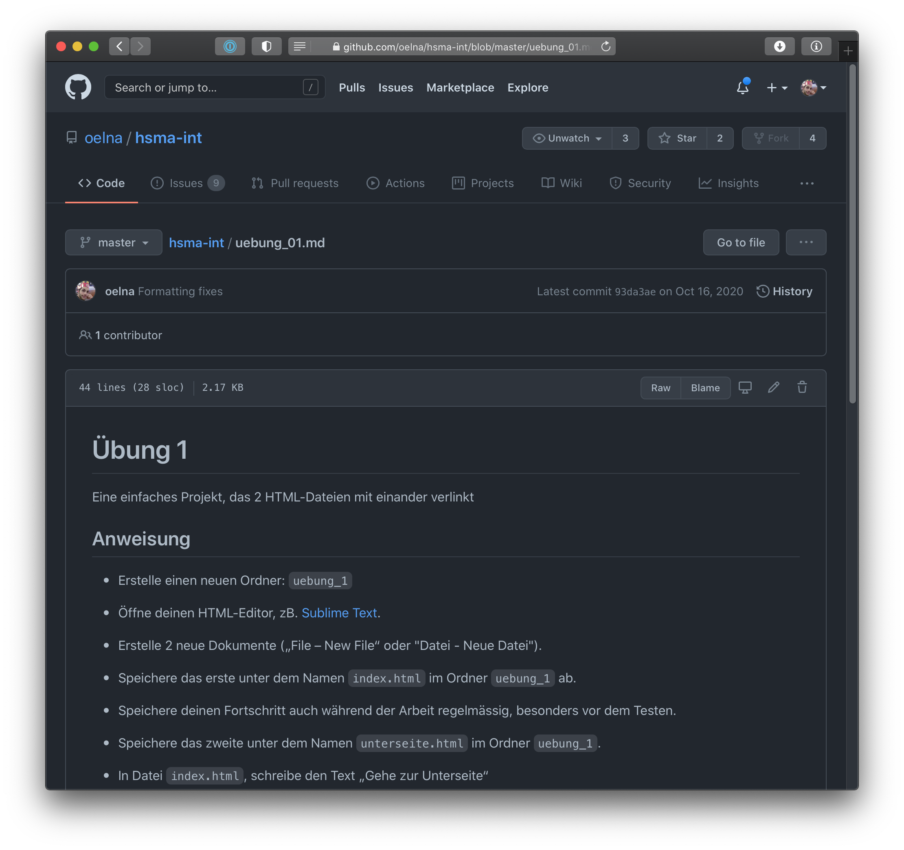

GCT2
Grundlagen Computer-Technik
Modernes HTML
Bisher kennen wir viele Grundlagen: Überschriften, Absätze, Listen, Links, Bilder, Tabellen und generische Container.
Zum Ende des Semesters geht es um HTML, das mehr Bedeutung ausdrückt und kleine Interaktionen ohne großes Framework ermöglicht.
Semantische Seitenbereiche
<header> <nav> <main>
<section> <article> <aside>
<footer>
<header>
Ein einleitender Bereich: Logo, Titel, Claim, Suche oder Navigation.
<header>
<a href="/">Studio Müller</a>
<p>Interface Design und Webentwicklung</p>
</header>
<nav>
Ein Bereich für wichtige Navigationen: Hauptmenü, Breadcrumbs, Inhaltsverzeichnis oder Pagination.
<nav aria-label="Hauptnavigation">
<ul>
<li><a href="/">Start</a></li>
<li><a href="/arbeiten">Arbeiten</a></li>
<li><a href="/kontakt">Kontakt</a></li>
</ul>
</nav>
<main>
Der zentrale Inhalt der Seite. Pro Seite sollte es normalerweise nur ein sichtbares <main> geben.
<section>
Ein thematischer Abschnitt. Meistens hat eine Section eine eigene Überschrift.
<section>
<h2>Leistungen</h2>
<p>Wir gestalten responsive Websites.</p>
</section>
<article>
Ein eigenständiger Inhalt, der auch außerhalb der Seite verständlich wäre.
<article>
<h2>Neue Ausstellung eröffnet</h2>
<p>Am Freitag startet die Werkschau.</p>
</article>
<aside>
Ergänzende Inhalte: Infobox, Teaser, Werbung, Linkliste oder Randnotiz.
<aside>
<h2>Auch interessant</h2>
<ul>
<li><a href="/typografie">Typografie im Web</a></li>
<li><a href="/farben">Farbsysteme</a></li>
</ul>
</aside>
<footer>
Ein abschließender Bereich: Autor, Datum, Copyright, Kontakt, Quellen oder verwandte Links.
<footer>
<p>© 2026 Studio Müller</p>
<a href="/impressum">Impressum</a>
</footer>
Faustregel: <div> bleibt erlaubt. Es ist sinnvoll, wenn ein Container nur für Layout oder Styling gebraucht wird.
Inhalte genauer beschreiben
<figure> <figcaption>
<mark> <address> <data>
<meter> <progress>
<figure> <figcaption>
Für Inhalte mit eigener Beschriftung: Bild, Grafik, Codebeispiel, Diagramm oder Zitat.
<figure>
<img src="plakat.jpg" alt="Plakatentwurf" />
<figcaption>Entwurf für die Jahresausstellung</figcaption>
</figure>
<mark>
Markiert Text, der im aktuellen Zusammenhang hervorgehoben werden soll, zB. ein Suchtreffer.
<p>Ihre Suche nach <mark>Grid</mark> ergab 12 Treffer.</p>
<address>
Kontaktinformationen zum nächstliegenden Artikel oder zur gesamten Seite.
<footer>
<address>
Kontakt:
<a href="mailto:info@example.org">info@example.org</a>
</address>
</footer>
<data>
Verbindet einen sichtbaren Text mit einem maschinenlesbaren Wert.
<p><data value="sku-4815">Poster A2</data></p>
<meter> <progress>
<meter> zeigt einen bekannten Messwert. <progress> zeigt den Fortschritt einer laufenden Aufgabe.
<p>Kontrast: <meter min="0" max="21" value="7.2">7.2</meter></p>
<p>Upload: <progress max="100" value="60">60%</progress></p>
Interaktion mit HTML
<details> <summary>
<dialog>
popover hidden inert
<details>
Ein Widget, dass sich öffnen und schliessen lässt.
Mit dem Attribut open ist ein <details>-Element beim Laden bereits geöffnet.
<details open>
<summary>Hinweis</summary>
<p>Diese Information ist am Anfang sichtbar.</p>
</details>
<dialog>
Ein modaler Dialog legt sich über die Seite. Der Rest der Seite ist dann nicht mehr direkt bedienbar.
popover-Attribut
Mit dem Attribut für <button> lassen sich andere Elemente auf Klick anzeigen.
| <details> |
Ein- und ausklappbare Zusatzinformation |
| <dialog> |
Fenster für eine Aufgabe oder Entscheidung |
| popover |
Kleines Overlay, das nicht zwingend modal ist |
Nützliche globale Attribute
hidden inert
contenteditable spellcheck
translate popover
hidden versteckt aktuell irrelevante Inhalte.
inert macht einen Bereich vorübergehend nicht interaktiv.
<p hidden>Diese Meldung wird erst später angezeigt.</p>
<main inert>
<button>Kann gerade nicht genutzt werden</button>
</main>
contenteditable spellcheck
Elemente können direkt im Browser bearbeitbar werden. Rechtschreibprüfung kann gezielt aktiviert oder deaktiviert werden.
<p contenteditable="true" spellcheck="true">
Dieser Text kann im Browser bearbeitet werden.
</p>
translate
Hilft Übersetzungstools: Bestimmte Inhalte sollen übersetzt werden oder unverändert bleiben.
<p>
Unsere App heißt <span translate="no">PixelPilot</span>.
</p>
Nicht alles davon muss man sofort verwenden. Wichtig ist die Frage: Welche Rolle hat dieser Inhalt?

Erweitere eine bestehende Aufgabe um semantisches HTML.